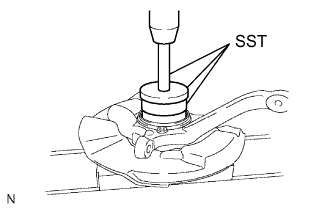

ПОВОРОТНЫЙ КУЛАК > ПОВТОРНАЯ СБОРКА
для подготовки
Нажмите здесь
1. УСТАНОВИТЕ САЛЬНИК ЛЕВОГО ПОВОРОТНОГО КУЛАКА

С помощью SST и пресса установите новый сальник поворотного кулака.
SST
09527-17011
09950-70010 (09951-07100)
09951-01000